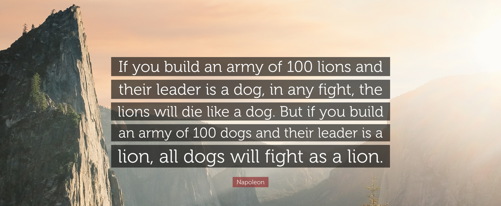

Freddy Goldberger
Highly accomplished Engineering Manager with 10+ years of leadership in autonomous mining vehicle development and support. Robust expertise in software and hardware development, data-center infrastructure, telecommunications, embedded systems, GNSS, automation, and instrumentation. Adept at coaching and mentoring for team growth, with a strong command of Agile and Lean methodologies.
Executive Summary
- Engineering Leadership: Successfully led cross-functional teams of up to 20 engineers, fostering a culture of innovation, mentorship, and high accountability.
- Strategic Management: Managed million-dollar budgets for critical infrastructure projects, including a $500k virtualization cluster renovation.
- Operational Excellence: Improved Service Level Agreement (SLA) compliance by 40% through process optimization and ISO9001-aligned documentation.
- Technical Expertise: Deep background in Electrical Engineering (Automation & Instrumentation) and Computer Science, enabling effective communication across technical layers.
- Agile Transformation: Championed the transition from Waterfall to Agile/Scrum methodologies, increasing team responsiveness and delivery speed.
Detailed Resume
Employment History
Systems Engineering Management – Autonomous Vehicles
Leidos, Tyson VA | August 2024 — Present
- Management of the Systems Engineering team at the Saxton Transportation and Operations Laboratory.
- Key contributor to the architecture documentation of cooperative driving automation.
- Project management of the creation of a scaled vehicle platform for research and development of cooperative and autonomous driving.
- Drive the adoption of industry-standard software development practices across the engineering team, improving code quality and efficiency.
Software Development Manager
Komatsu, Tucson AZ | August 2022 — August 2024
- Management of the autonomous system Product Development and Quality Assurance teams.
- Influence the decision making of strategic technical decisions with executive leadership.
- Fostered a healthy, inclusive team atmosphere valuing respect, accountability, and integrity.
- Hire, retain and grow talent on the team, offering coaching and development opportunities.
- Validate key architecture decisions and solutions.
Lead Supervisor of Global Support
Komatsu, Tucson AZ | December 2020 — July 2022
- Managed the Global Support team for autonomous systems across time zones and languages, resulting in improved customer satisfaction and reduced downtime.
- Streamlined product deployment and support processes, enhancing customer experience.
- Enhanced service delivery by managing KPIs/SLAs and implementing improvement strategies.
Engineering Supervisor of Global Support
Modular Mining (Komatsu Company), Tucson AZ | January 2015 — December 2020
- Lead a team of engineers to achieve higher levels of customer satisfaction by implementing processes to speed up issue resolution.
- Lead the preparation of support processes meeting ISO9001 standards.
- Project management for the commissioning of a data-center infrastructure for support.
- Supervise the development of support tools to automate troubleshooting.
Product Engineer
Modular Mining (Komatsu Company), Tucson AZ | July 2011 — December 2014
- Diagnosed system failures, reported bugs, and implemented workarounds to improve reliability.
- Led training and managed installations/upgrades for FrontRunner systems.
- Developed automation applications for maintenance and support tasks.
Education
- Master of Engineering Management Candidate, Johns Hopkins University (Expected 2026)
- Focus: Computer Science and Artificial Intelligence
- B.S. Electrical Engineering, Universidad Técnica Federico Santa María, Chile
- Major: Automation and Instrumentation
- Minor: Computer Science
Technical Skills
- Programming: Java, C/C++, Verilog (VHDL), Bash Shell, MATLAB, SQL.
- Electronics & Embedded: Altium Designer, Altium Circuit Studio, IAR Embedded Workbench, Microchip MPLAB.
- Infrastructure: VMware vSphere, Proxmox, Arch Linux, Debian, Red Hat.
- Systems: RTK/PPP High precision positioning, TCP/IP, I2C, SPI, Wi-Fi, LTE.